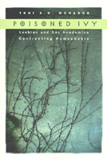

<body bgcolor="#FFFFFF" text="#000000" link="#0000FF" vlink="#CC0000" alink="#CC0000"><center><hr width="350" size="1" align="center" noshade>A startling look at the way academia opens its arms to gay and lesbian scholarship but not to gay and lesbian scholars<hr width="350" size="1" align="center" noshade><p><a href="https://cdcshoppingcart.uchicago.edu/Cart/ChicagoBook.aspx?ISBN=9781566394871&&PRESS=temple" target="_top">Buy this book!</a> | <a href="https://cdcshoppingcart.uchicago.edu/Cart/Cart.aspx?PRESS=temple" target="_top">View Cart</a> | <a href="https://cdcshoppingcart.uchicago.edu/Cart/Cart.aspx?PRESS=temple" target="_top">Check Out</a></p><p></p></center><!--none//--><h1>Poisoned Ivy</h1>
<H2>Lesbian and Gay Academics Confronting Homophobia</H2>
<h3>Toni A. H. McNaron</h3>
<P>cloth 1-56639-487-2 $70.50, Nov 96, <FONT COLOR=#990033>Out of Stock Unavailable</FONT>
<br>paper 1-56639-488-0 $31.95, Nov 96, <FONT COLOR=#990033>Available</FONT>
<BR> 256 pp
6x9
</P><h3 align="center"><P><font color="#996633">Honorable Mention for Outstanding Books Awards, Gustavus Myers Center for the Study of Bigotry and Human Rights in North America,
1997</font></P>
</H3>
<p>Lesbian and gay books and conference papers might be hot items these days, but lesbian and gay academics all over the country are still subjected to homophobic personal slights, harassment, and discrimination. How do they cope, and what kinds of actions can promote positive change?
<p>In <I>Poisoned Ivy, </I>Toni A. H. McNaron tells her own story and reports on the experiences of some 300 lesbian and gay academics with at least fifteen years in their profession. McNaron, a lesbian who has spent thirty years teaching English at one institution, tells of her own painful steps toward coming out to colleagues and students. Recalling her terror of being identified as a lesbian, she describes how she awkwardly attempted to befriend other (probably closeted) faculty members and stifled class discussions that veered too close to the taboo topic of sexuality.
<p>Like McNaron, faculty from a wide range of disciplines, geographical regions, and institutions speak out about their long-term experiences in negotiating the difficult terrain of casual conversations with colleagues, departmental politics, and administration policies. Each had to carefully weigh the risks of coming out, and their stories dramatically underscore that no decision fits all situations. In stark contrast to accounts of being denied tenure or promotion are testimonies about the elation that comes from doing lesbian/gay scholarship or political work on campus, or mentoring students and junior faculty.
<p>As numerous personal testimonies make clear, the bad old days are far from over. Lesbian and gay individuals flourish in relatively few progressive departments and institutions; at others, they find ambivalent or inhospitable responses. Seeing the hard-won gains in civil liberties under siege all over the country, some lesbian and gay faculty wonder whether they were wise to come out; others are steadfast in their choice but not sanguine about the threat to their careers. <I>Poisoned Ivy </I>is an unsparing account of contemporary academic life.
<BR>&nbsp;<h2>Excerpt</h2><P>Excerpt available at <a href="http://www.temple.edu/tempress">www.temple.edu/tempress</a></p>
<BR>&nbsp;<h2>Reviews</h2>
<p><i>"The book effectively captures the process of how discrimination occurs and how a hostile working environment is perpetuated."</i>
<br>&#151<b>Contemporary Women's Issues Database</b>
<p><i>"As one professor said to Toni McNaron as she was beginning work on </i>Poisoned Ivy<i>, 'I personally believe that academe is one of the most difficult places to be out because although we are often enveloped by a (supposedly) liberal environment, heterosexism has an insidious way of permeating that seemingly accepting exterior and striking at the core of people's deepest fears.' </i>Poisoned Ivy<i> powerfully demonstrates the truth of this observation. McNaron brings together her personal narrative, the results of a study she conducted of three hundred-plus gay and lesbian academics and insights gleaned from other research to construct this multidimensional portrait of the academy during the past three decades. As one might expect, it is not a pretty picture, although certainly there is some cause for hope... Like all pathbreaking books, </i>Poisoned Ivy<i> suggests a myriad possibilities for additional research."</i>
<br>&#151<b><i>Women's Review of Books</i></b>
<BR>&nbsp;<h2>Contents</h2><P>
<p>Preface
<br>Acknowledgments
<br>1. "Who and Where Are We?"
<br>2. "In or Out in the Classroom?
<br>3. "And What Did You Do Over the Weekend?"
<br>4. "Any Room for Me Here?"
<br>5. "Are We in Your Mind?"
<br>6. "Is There a Metanarrative in the House?"
<br>Appendix A: Faculty Questionnaire
<br>Appendix B: Institutional Questionnaire
<br>Appendix C: Descriptive Data
<br>Bibliography
</P><BR>&nbsp;<H2>About the Author(s)</H2>
<table><tr><td valign="top"><img src="/tempress/authors/1286_au.gif" height="90" width="75"></td><td width="100%" valign="middle"><p><B>Toni A. H. McNaron</B> is Professor of English and Women's Studies at the University of Minnesota, where she has taught for over thirty years. She is the author of <I>I Dwell in Possibility, Voices in the Night: Women Speaking about Incest; The Sister Bond: A Feminist View of a Timeless Connection; </I>and co-editor with Bonnie Zimmerman of <I>New Lesbian Studies: Into the 21st Century.</I></P></td></tr></table>
<BR><H2>Subject Categories</H2>
<p><A HREF="/tempress/sexual.html" TARGET="_top">Sexuality Studies/Sexual Identity</a>
<BR><A HREF="/tempress/general.html" TARGET="_top">General Interest</a>
</p>
<p align="center"><a href="https://cdcshoppingcart.uchicago.edu/Cart/ChicagoBook.aspx?ISBN=9781566394871&&PRESS=temple" target="_top">Buy this book!</a> | <a href="https://cdcshoppingcart.uchicago.edu/Cart/Cart.aspx?PRESS=temple" target="_top">View Cart</a> | <a href="https://cdcshoppingcart.uchicago.edu/Cart/Cart.aspx?PRESS=temple" target="_top">Check Out</a></p><p><font face="Arial" size="1"><a href="copyright.html" onMouseOver="window.status='Web Copyright Policy';return true;" onMouseOut="window.status=''" title="Web Copyright Policy">&copy;</a> 2015 <a href="http://www.temple.edu" target="new" onMouseOver="window.status='Link to Temple University home page';return true;" onMouseOut="window.status=''" title="Link to Temple University home page">Temple University</a>. All Rights Reserved. http://www.temple.edu/tempress/titles/1286_reg.html</font></p>